/* jon-rafman - proofs */
12 plates. Deterministic overlays rendered by the composition-analysis skill.
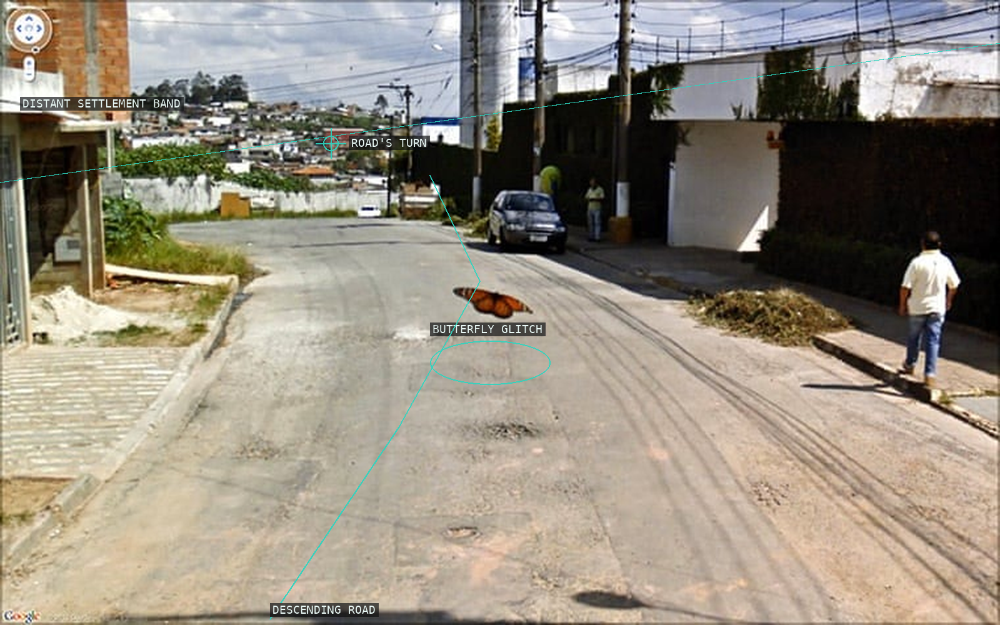
01 Road recession is interrupted by a small butterfly-like glitch.
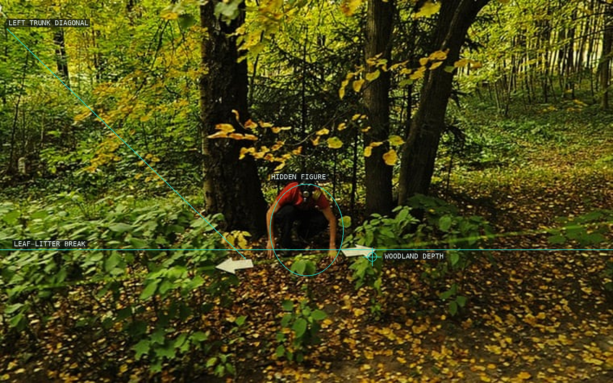
02 A concealed red figure emerges from competing woodland paths.
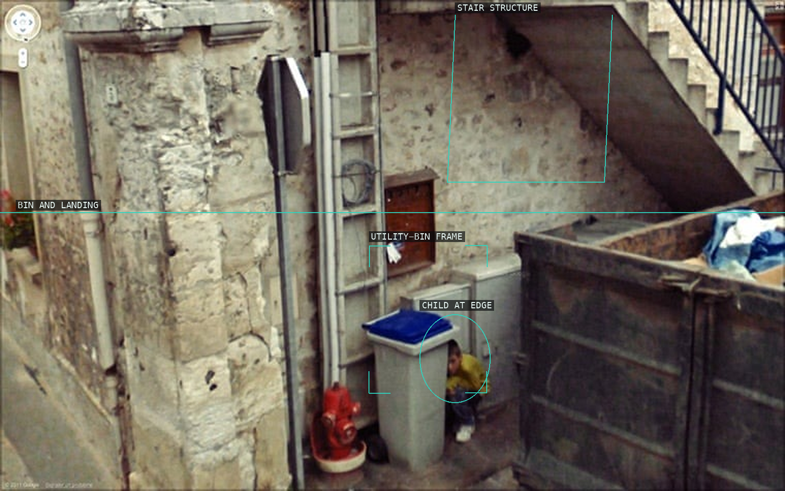
03 Service rectangles isolate a child at the lower edge.
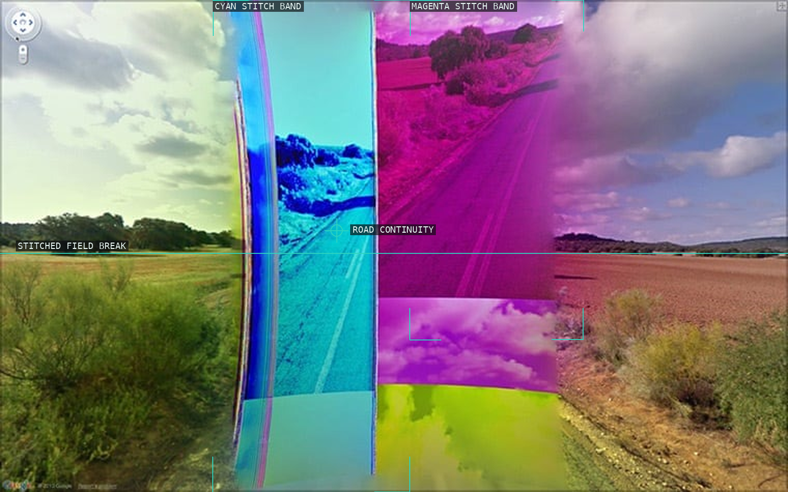
04 Color seams divide a continuous road into machine-made planes.
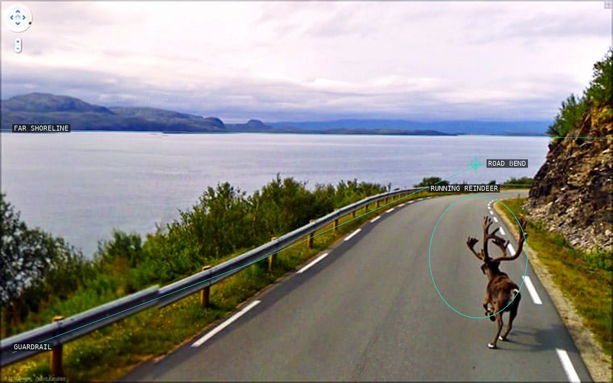
05 A reindeer counters the road's recession.
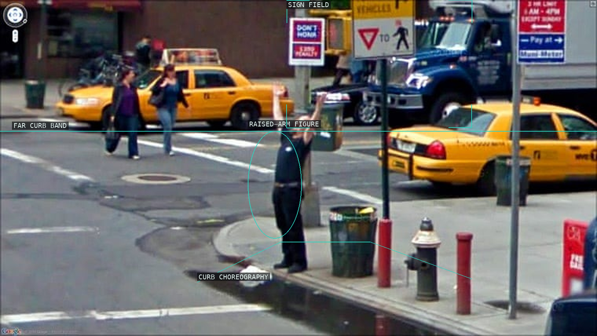
06 A raised arm holds amid a dense urban sign field.
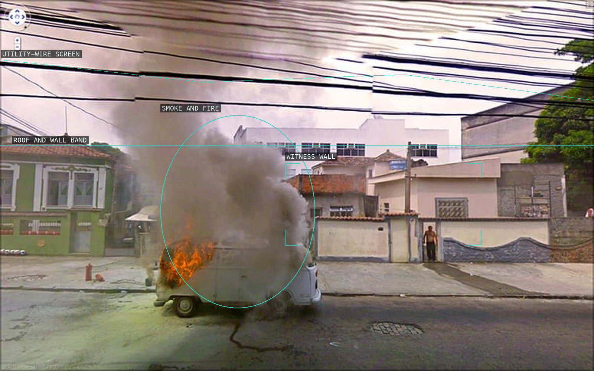
07 Fire and smoke break through a screen of utility wires.
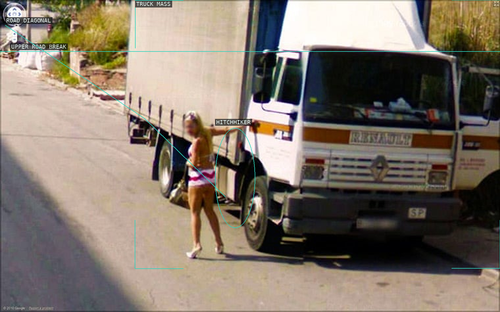
08 The hitchhiker destabilizes the scale of a cropped truck.
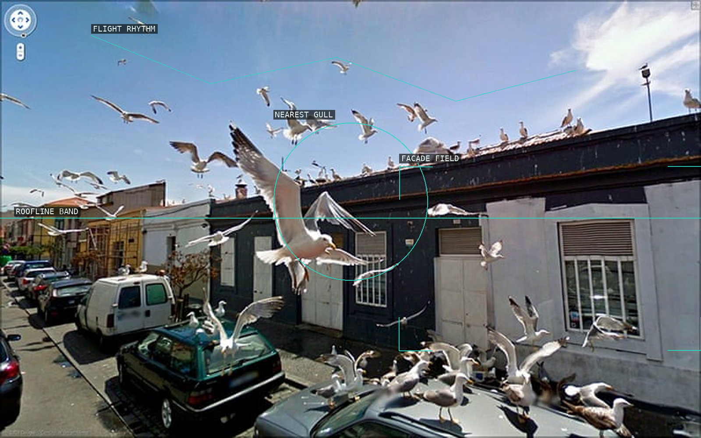
09 Gulls spread a street scene into an airborne pattern.
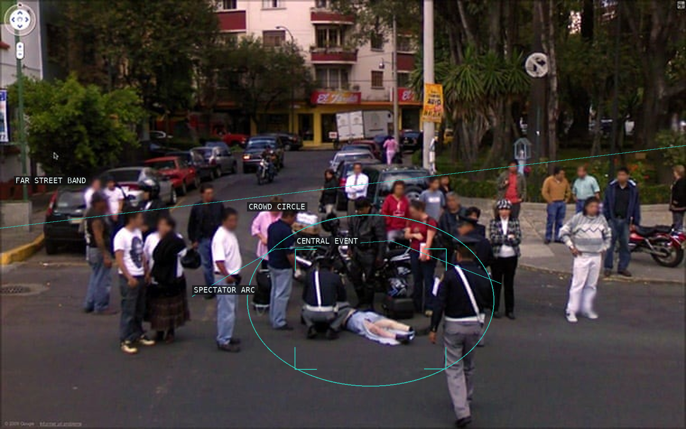
10 A spectator ring encloses an intimate street event.
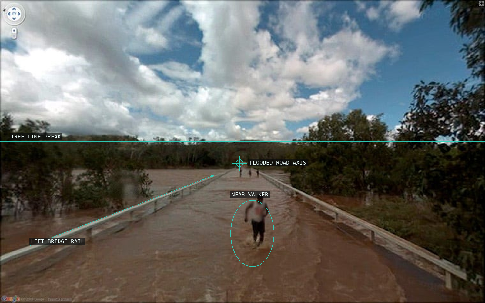
11 Floodwater becomes a road of receding figures.
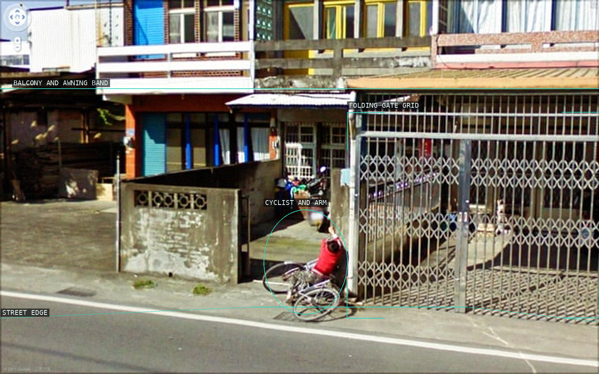
12 A raised arm interrupts gates, shutters, and street bands.